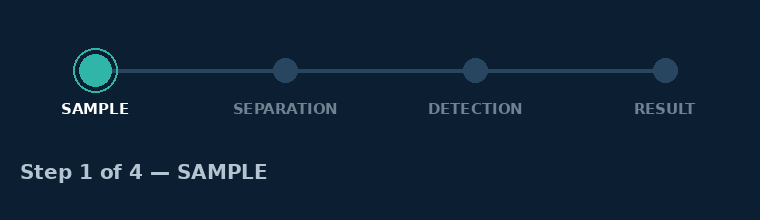

Aurelia Scientific builds analytical instruments, consumables, and informatics software that help laboratories move from sample to insight — faster, and with confidence in every result.
From sample prep to final report, explore the instrument families laboratories rely on across pharma, food safety, environmental, and academic research.
Preconfigured methods, compliance documentation, and applications support tailored to the standards your lab already works under.
Every Aurelia instrument reports into the same pipeline, so a sample never disappears into a black box between steps.

Every system ships with Helix Cloud connectivity, predictive maintenance alerts, and a global service network — so uptime, not troubleshooting, defines your day.
Method development guidance and case studies from Aurelia scientists and customer labs.
A method comparison across matrix types shows how column chemistry choices affect sensitivity.
Helix Cloud LIMS integration eliminated manual transcription across three sites.
Applications scientists walk through a validated transfer protocol end to end.
Our applications scientists can match your throughput, budget, and compliance needs to the right instrument configuration.